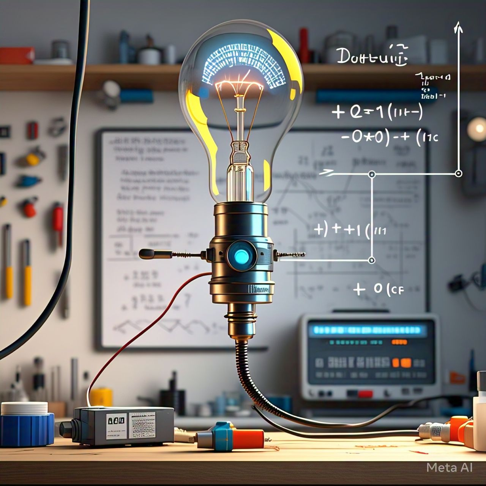

What Does It really Mean by Electric Current?
Let’s analyze the term “electric current.”
Current means something that flows, like the current of water or thermal current. In general, anything that moves is referred to as a current.
For example, Moving sand means Sand current,moving waves mean wave current
Coming to the electric current: it is the electrons that moves or flows, creates the electric current
from this you may think where these electron comes in order to flow. That leads to our next concept
Source of Free Electrons
Atoms have valence electrons, which are the outermost electrons in an atom. When excitation occurs—such as through the application of energy (heat, light, or electric field)—these electrons gain enough energy to break free from their atomic orbit.
This movement of free electrons contributes to electric current Free electrons come from the valence shell of atoms. These are loosely bound electrons that can move freely under the influence of an electric field.
Charge of an Electron
The charge of a single electron is approximately:
e=−1.602×10−19C
Coulomb is the unit of electric charge
This means 1 coulomb (C) of charge is equivalent to the charge of approximately:6.242×1018electrons
Since a coulomb is a large quantity, electric charge is often measured in millicoulombs (mC) or microcoulombs (µC) for practical purposes.
Unit of Electric Current
The unit of electric current is the ampere (A).
The ampere measures the amount of electric charge flowing through a conductor per second.
If 1 coulomb of charge passes through a given point in a circuit in 1 second, the current is said to be 1 ampere:
1A=1C/1s
Origin of the Term "Ampere"
The unit ampere is named in honor of André-Marie Ampère, a French physicist who made significant contributions to the study of electromagnetism.
Real-Life Examples
1. A small LED light may use 0.02 amps (20 milliamps).
2. A smartphone charger typically draws 1–3 amps.
3. A large air conditioner might draw 10–20 amps.
As I mentioned, when electrons move, electricity is generated. You might wonder, how can we make electrons move?.
There are several ways to initiate the movement of electrons, such as:
Heating
Applying voltage
Light energy (photocells)
most commonly you may encountered a voltage source like battery
So coming to next part that is what is voltage??
voltage is the pressure that pushes electrons .it is the difference in electric potential energy between two points in a circuit .here voltage sources like battery , generators are example for that.
Coming to our law that connects both
Ohm's law
Ohm's law states that At a constant temperature, the voltage (V) across a conductor is directly proportional to the current (I) flowing through it.
V∝I
so in order to remove the proportionality a constant is multiplied
so
V=IR
R=Resistance
You may think what is resistance ,well resistance is
Resistance is a property of a material that opposes the flow of electric current through it. It is like a blocker or something like a opposition to flow.When electrons flow through a conductor (like a metal wire), they collide with the atoms of the material. These collisions slow down the electrons,thus flow of electron is reduced there by electric current is reduced.
Due to the collision heat is generated in resistance material
unit of resistance is ohm mega ohm ,micro ohm etc can be found in differnt applications
Resistance depends on resistivity,length,area of cross section
R=(ρL/A)
1. Resistivity(ρ)
It is a fundamental property of materials that quantifies how strongly a material resists the flow of electric current. It is an intrinsic property, meaning it depends on the material itself and not on its shape or size.
2.Length of the Conductor (L)
Resistance increases with the length of the conductor. A longer wire provides more resistance to the flow of electrons
3.Cross-sectional Area of the Conductor (A)
Resistance decreases as the cross-sectional area of the conductor increases. A wider wire allows more electrons to flow through, reducing resistance.
4.Temperature (T)
For most materials, as temperature increases, resistance increases. This is because the atoms in the material vibrate more at higher temperatures, which interferes with the flow of electrons.
(Now you understand why temperature in Ohm's Law is kept constant: to ensure that resistance (R) remains constant)
R=R0(1+α(T−T0))
where R0 is the resistance at a reference temperature T0 and α is the temperature coefficient of resistance.
While in some exception cases as temperature increases resistance decreases in semiconductor mostly because they work on electron-hole mechanism.
In electrical circuits, you often see components called resistors. Resistors are devices specifically designed to provide a fixed amount of resistance, limiting the flow of electric current.
There are also variable resistors, and a potentiometer is one of the examples of variable resistance
Practically Applying section
Theory alone is not enough; practical experiments bring true understanding.
Design a Resistor for a Simple Green LED Circuit Powered by a 9V Battery?
First Determine LED Current,From the datasheet.The required current for the green LED is 20 mA (0.02 A).
Here are some led's data (slight variation will be there w.r.t manufactures)
Red LEDs typically require 1.8V to 2.2V and 20mA, green LEDs require 2.0V to 3.0V and 20mA, and blue LEDs require 3.0V to 3.5V with 20mA
The voltage source is 9V, and the voltage required for green LED is approximately 3V.
Since the LED needs only 3V, the remaining voltage of 9V ie 9V-3V=6V must be dropped across the resistor.
Calculate the resistor value from Ohm's law ie V=IR
Using Ohm’s Law R=V/I
R =6V/0.02A = 300 Ω
A resistor of 300 Ω is ideal. However, considering tolerances, a resistor in the range of 300 ± 50 Ω will work fine.
Section flow and Summary
Electric current | Charge of electron | Units | Voltage | Real life example | Resistance | Ohms law | Practical application
"Hope you enjoyed! Thank you for reading, and happy learning. If you have any doubts, feel free to email me at me@magnetonn.in.